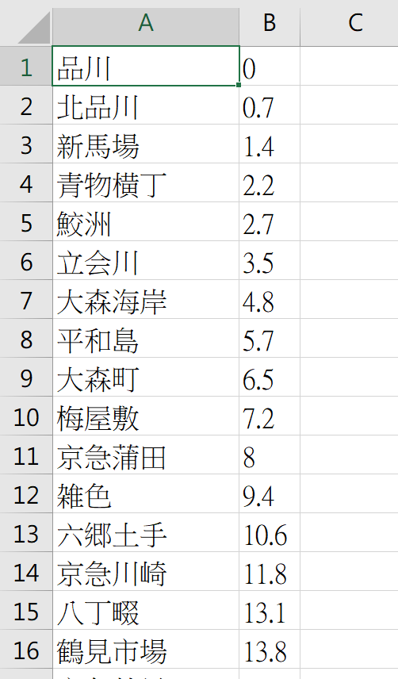
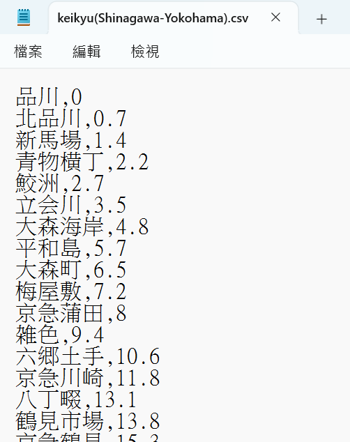

匯入檔案格式
路線資料檔案格式(csv)
以下「列」指橫列(row)、「行」指直行(column)。
路線資料可以用 .csv 檔匯入。您有兩種製作 .csv 檔的方式：用 Excel，或直接用記事本。
建議
若網路上沒有現成的 Excel 檔案，或站數不多，用記事本製作能省去更改編碼的時間、也比較不容易出錯。或是直接使用網站內建的路線資料編輯器，詳情請見此頁。
格式
每一個車站佔一列，由上到下依照路線的順序排列。每一列有 2 到 4 行：
| 第幾行 | 內容 | 必填 | 說明 |
|---|---|---|---|
| 第 1 行 | 站名 | 是 | |
| 第 2 行 | 累計里程 | 是 | 以公里為單位，從第一站算起。第一站一律當作 0 |
| 第 3 行 | 預設停站時間 | 否 | 以秒為單位，留白則使用基本設定中的「預設停站時間」 |
| 第 4 行 | 站名別名 | 否 | 顯示在運行圖的右側，例如外文站名或車站編號 |
- 不需要標題列，第一列就是第一個車站。
- 第 3、4 行不需要的話可以整行省略，只留站名和里程即可。
- 累計里程必須一站比一站大。
- CSV 不包含軌道配置。匯入 CSV 時軌道配置與線路拓樸會重設為預設值；要連同軌道配置一起存檔，請使用 JSON。
以 JR 香椎線為例，用記事本打開會是這個樣子：
西戸崎,0
海ノ中道,2.1
雁ノ巣,6.5
奈多,7.4
和白,9.2
如果要加上別名，但不填停站時間，中間留空即可：
西戸崎,0,,Saitozaki
海ノ中道,2.1,,Uminonakamichi
使用 Excel 製作
若您可以從網路上取得包含站名及累計里程的 Excel 檔（.xls / .xlsx），可以將它打開，只保留需要的行：左行為站名、右行為里程（以公里為單位）。如下圖所示：

存檔時，存檔類型請選擇「CSV(逗號分隔)」，再儲存至您要的位置即可。
若您有使用漢字、日文、韓文等，存檔請參閱這裡。
直接使用記事本製作
找到並打開記事本，將站名及里程輸入。站名與里程之間以半形英文逗號（,）分隔，每個車站換行一次。

按照格式輸入完成後：
- 按下檔案 > 另存新檔
- 檔案名稱打上「您想要的名稱.csv」
- 存檔類型選擇「所有檔案」
- 編碼選擇「UTF-8」
- 存檔